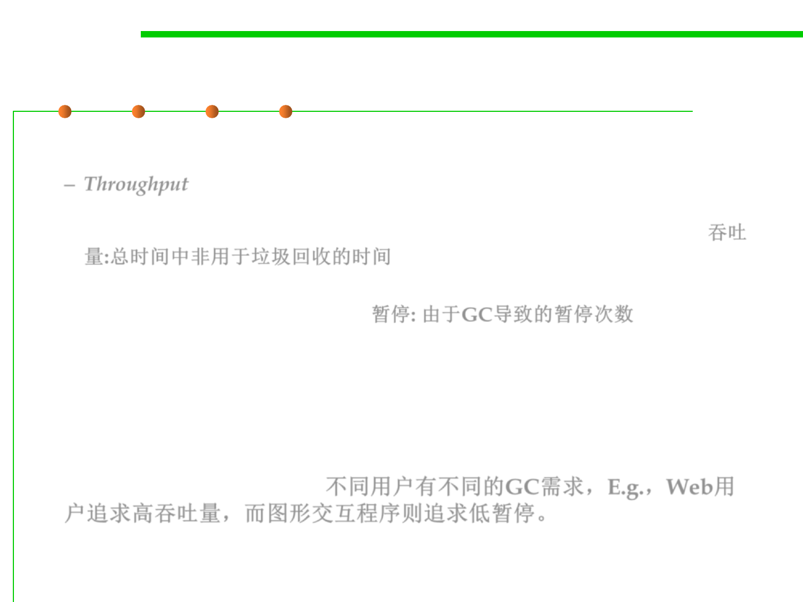

8.1 Metrics, Principles, and Methods of Construction for Performance
Performance Considerations in GC
▪ Performance Considerations
– Throughput is the percentage of total time not spent in garbage collection
considered over long periods of time. Throughput includes time spent in
allocation (but tuning for speed of allocation is generally not needed). 吞吐
量:总时间中非用于垃圾回收的时间
– Pauses are the times when an application appears unresponsive because
garbage collection is occurring. 暂停: 由于GC导致的暂停次数
▪ Users have different requirements of garbage collection. For
example, some consider the right metric for a web server to be
throughput because pauses during garbage collection may be
tolerable or simply obscured by network latencies. However, in an
interactive graphics program, even short pauses may negatively
affect the user experience. 不同用户有不同的GC需求，E.g.，Web用
户追求高吞吐量，而图形交互程序则追求低暂停。